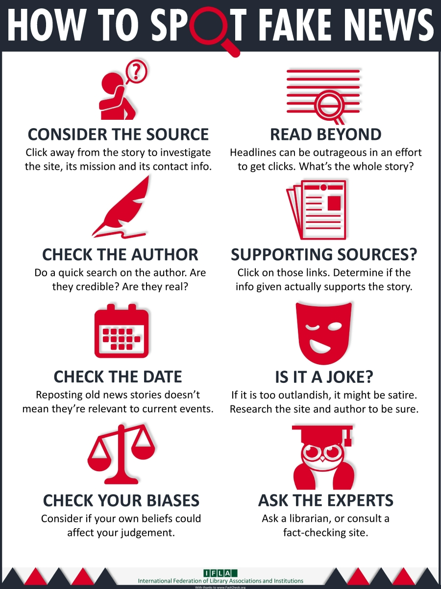
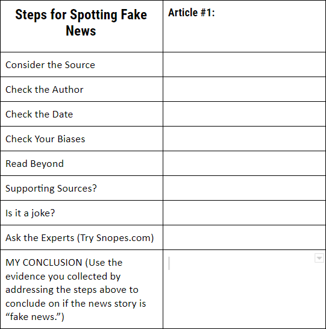

When you work on an assignment or a project, one of the biggest types of sources you would use is news articles. They provide lots of factual information and
describe a certain situation in depth.However, one of the biggest problems with news article is that it may have fake news in it. In order to identify it, try using this chart
and image.


You can use several steps to make sure that the news article that you are reading is fake or not. The first thing you would do is check the source. Figure out whether the publisher
of your news article is a big company. You can also check who the author is and when the article was published. These things involve you doing additional research. Furthermore, read the
entire article. Reading through the entire article will help you gain a better understanding as to what the article is talking about. Additionally, make sure the links and sources within the
article are legit. Several news article will direct you to different websites with hyperlinks in the article. Make sure that those websites are real and provide real information with supporting
evidence. Moreover, check your biases. Is your bias towards a certain topic preventing you from realizing that whatever you are reading is fake? Finally ask some experts. Ask a librarian or a teacher
to see if the article your reading is fake. There are also several websites that checks if an online article is fake. These websites are:
Now that we understand how to identify fake news, lets try an example. The article below is about Barron trump winning a prestigious national academic award. Click on this link to see the article.
After going over this article, I was able to identify that it is fake news. Heres why. The publisher of this article, Breaking News, is clearly a fake news company. I was able to determine this by researching about this news company. Furthermore, if you notice carefully, the news article
does not provide the author name or the article's published date. These signs alone are clear indicators of fake news. Furthermore, after reading through the entire article, I was to understand that the
information in the article is fake. This is because the article did not provide what Barron Trump speicifcally won. All it said was national award. Finally to make sure that my decision was right, I checked on
"Snopes.com" and noticed that they too said that this news article is fake. Now that we have gone through this example, additional articles are given as practice. Here are the articles.